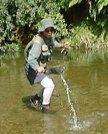

エッセイ
キウイスタイルの悲哀
ワイカトにいよいよ夏が来て暑くなってきたのと、ツランギの斉藤完治さんを見習って、穴だらけのウェーダーのオーバーホールを開始したので、化繊のタイツを履いてからさらに短パンを履く.......という格好（ニュージーランドのフィッシングガイドさんたちのような、いわゆるキウイスタイル）で釣りに行くことにした。

いざ、出かけようと支度をしていると、ホストファミリーの親戚一同がやって来た。その格好のまま、とりあえず挨拶をしたところ、小学生の女の子にマジマジと奇異の目で見られてしまった。このスタイルというのは、ニュージーランドでも一部の釣り人やガイドにしか馴染みが無いのだろうか？途中で立ち寄ったスーパーでもけっこう人目を惹いていたような気が.........するし。
馬鹿丸出しだったのは、牧場の柵をまたごうとした友人のため、ウェーディングシューズでワイヤーを踏み下げてやったこと。てきめんに電気ショックをくらってしまった。（**;） ニュージーランドの牧場では、牛や羊が柵を乗り越えるのを防ぐため、かなり高圧の電流を常時流しているのである。
ラムちゃんに電撃をくらう諸星あたる君の気持ちがよ～くわかった次第。
このスタイルは、他にも、トゲトゲの植物に弱かったり、スプリングクリークで気むずかしいライズを狙っての長時間の立ち込みにはさすがに冷たかったり、○○○○が濡れるといきなり寒くなったり、いろいろ難点はあるが、晴れた暑い日の長時間歩行には、いかなる通気性素材のウェーダーに勝る、何ものにも替えがたい快適さがある。
エッセイ 目次へ
サイトマップ
ホームへ
お問い合わせ